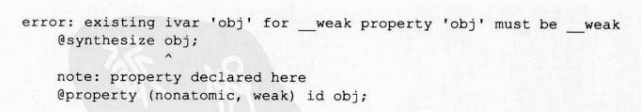

当ARC有效时, Objective-C类的属性也会发生变化
property (nonatomic, strong) NSString *name;
当ARC有效时,以下可作为这种属性声明中使用的属性来用
如表1-3所示
表1-3属性声明的属性与所有权修饰符的对应关系
| 属性声明的属性 | 所有权修饰符 |
|---|---|
| assign | __unsafe_unretained修饰符 |
| copy | __strong修饰符(但是赋值的是被复制的对象) |
| retain | __strong修饰符 |
| strong | __strong修饰符 |
| unsafe_unretained | __unsafe_unretained修饰符 |
| weak | __weak修饰符 |
以上各种属性赋值给指定的属性中就相当于赋值给附加各属性对应的所有权修饰符的变量
中
只有copy属性不是简单的赋值,它赋值的是通过 NSCopying接口的 copy withZone:方法复
制赋值源所生成的对象
另外,在声明类成员变量时,如果同属性声明中的属性不一致则会引起编译错误
比如下面
这种情况
id obj;
在声明id型obj成员变量时,像下面这样,定义其属性声明为weak
property (nonatomic, weak) id obj;
编译器出现如下错误

此时,成员变量的声明中需要附加__weak修饰符
id __weak obj
或者使用 strong属性替代weak属性
@property (nonatomic, strong) id obj